How to install and use DeskBuddy
DeskBuddy is a free animated buddy that reminds you to drink water, take breaks, stretch and catch meetings. No account needed. Back to the downloads page
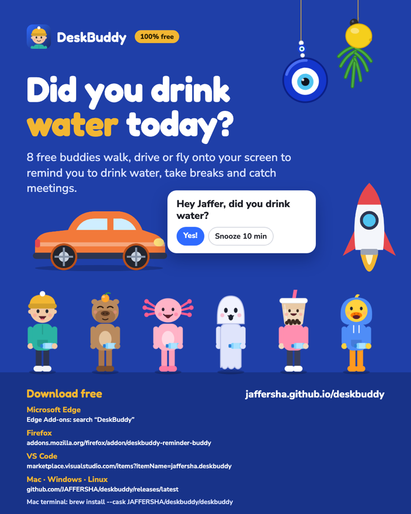
1. Install
Microsoft Edge
- Open Edge Add-ons and search for DeskBuddy: Animated Reminder Buddy, or use this link.
- Click Get, then Add extension.
- Click the puzzle-piece icon next to the address bar, then the pin beside DeskBuddy, so its icon stays visible.
Firefox
- Open DeskBuddy on Firefox Add-ons.
- Click Add to Firefox, then Add.
- Click the puzzle-piece icon in the toolbar and pin DeskBuddy.
VS Code
- Open VS Code, go to the Extensions view (
Cmd+Shift+Xon Mac,Ctrl+Shift+Xon Windows and Linux). - Search for DeskBuddy (publisher Zero to Deploy) and click Install. Or open the Marketplace page.
- Click the DeskBuddy icon in the left bar, or look for the DeskBuddy view in the Explorer sidebar.
Desktop app (Mac, Windows, Linux)
- Download it from the downloads page or GitHub Releases.
- Mac: open the .dmg and drag DeskBuddy to Applications. If macOS says it can't be opened, go to System Settings, Privacy & Security, and click Open Anyway. Or run
brew install --cask JAFFERSHA/deskbuddy/deskbuddy. - Windows: run the .exe. If SmartScreen warns you, click More info, then Run anyway.
- Linux: make the .AppImage executable and run it.
- The buddy appears over your whole screen. Find its settings in the menu bar (Mac) or system tray (Windows).
2. First time
Important: after installing a browser extension, refresh the pages you already have open. The buddy only appears on pages loaded after the install.
- Click the DeskBuddy icon in your toolbar to open the settings.
- Pick your buddy under Your buddy and type Your name, so reminders say your name.
- Press Try next to a reminder (for example Water) to see how it looks right now.
- That's it. Reminders arrive on their own at the intervals you set.
This is what you will see in Edge, Firefox or any other browser: the buddy stands at the bottom of the page, the charm hangs from the top, and the reminder bubble has the answer buttons.
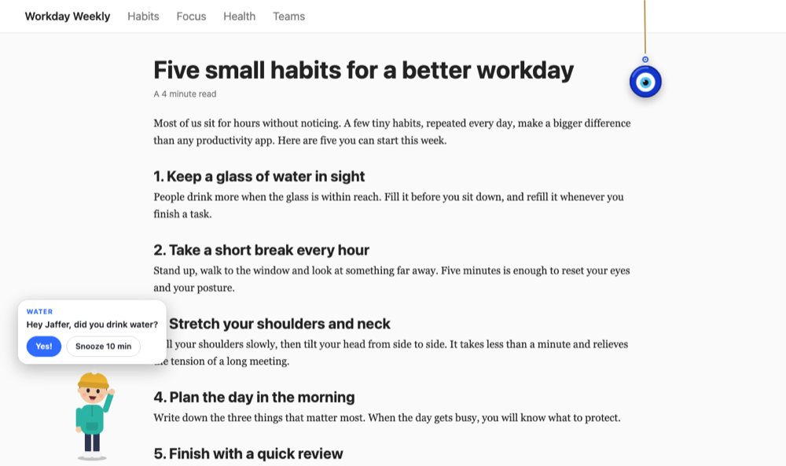
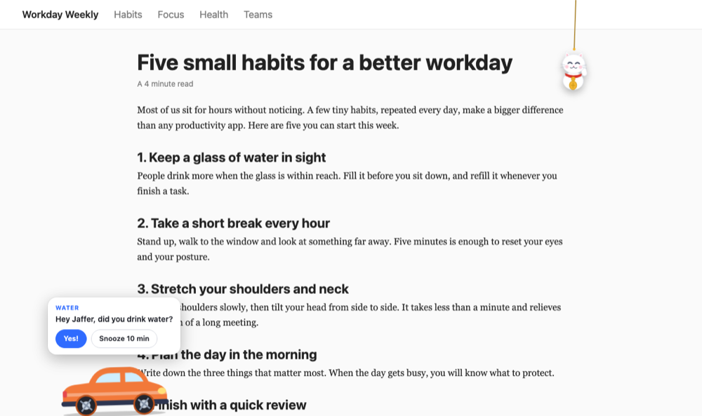
3. What you can change
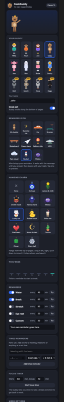
- Reminders: switch Water, Break, Stretch, Eye rest and Custom on or off, and set how often (in minutes). Edit the Custom text to say anything you like.
- Reminder icon: choose who brings the reminder: the buddy, a car, scooter, skateboard, paper plane, balloon, UFO, rain cloud, rocket or Webby the spider, or "Surprise me". Tap one to preview it.
- Hanging charm: a good-luck charm hangs from the top of the page. Drag it to move it.
- Timed reminders: type what and when (for example "Team standup" at 11:00), choose Once, Every day or Weekdays, and optionally get a warning 5, 10 or 15 minutes before. Click Add timed reminder.
- Focus timer: click Start focus timer. The buddy tells you when to take a break and when to get back to work.
- This week: a small chart and streak of how many reminders you answered.
- More options: snooze length (5, 10 or 30 minutes), quiet hours, a daily summary and sounds (Off, Chime, Pop, or one that matches the icon).
- Pause 1h: the button at the top stops reminders for an hour, for example during a meeting.
4. When a reminder appears
- Click the main button (for example Yes! or Taking it) to answer. The buddy cheers.
- Click Snooze to be reminded again later, or Skip today to skip it for the rest of the day.
- If you reply with a car, rocket or other ride, it waits with the message until you answer, then leaves with your reply.
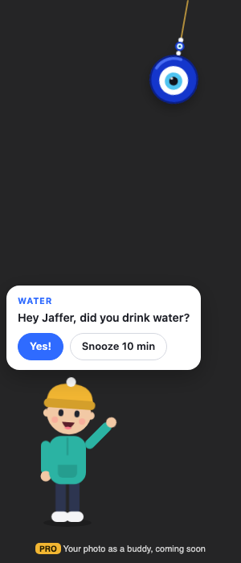
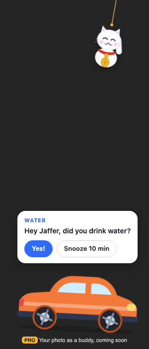
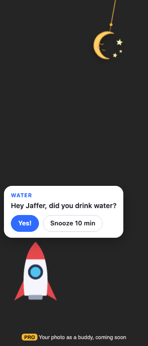
More rides to choose from:
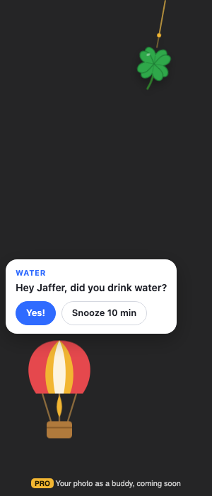
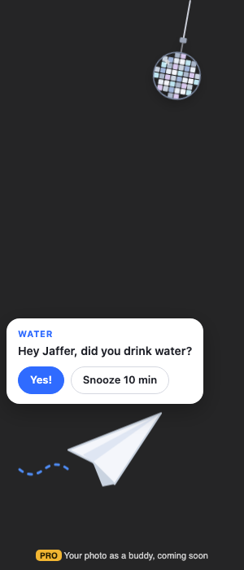
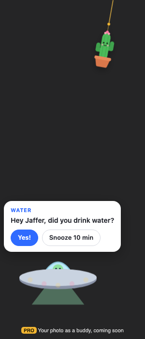
5. In VS Code
- The buddy lives in the DeskBuddy view in the sidebar. Use the buttons at the top of the view to pick a character or charm, add a timed reminder, start the focus timer or open settings.
- For a bigger stage, run DeskBuddy: Open Big Stage in Editor (
Cmd+Shift+P, then type the name). - To have the buddy over your whole screen, use the desktop app and turn on Deskbuddy: Desktop Overlay in VS Code settings.
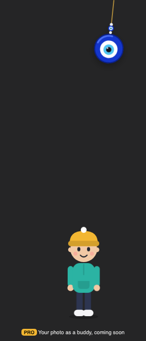
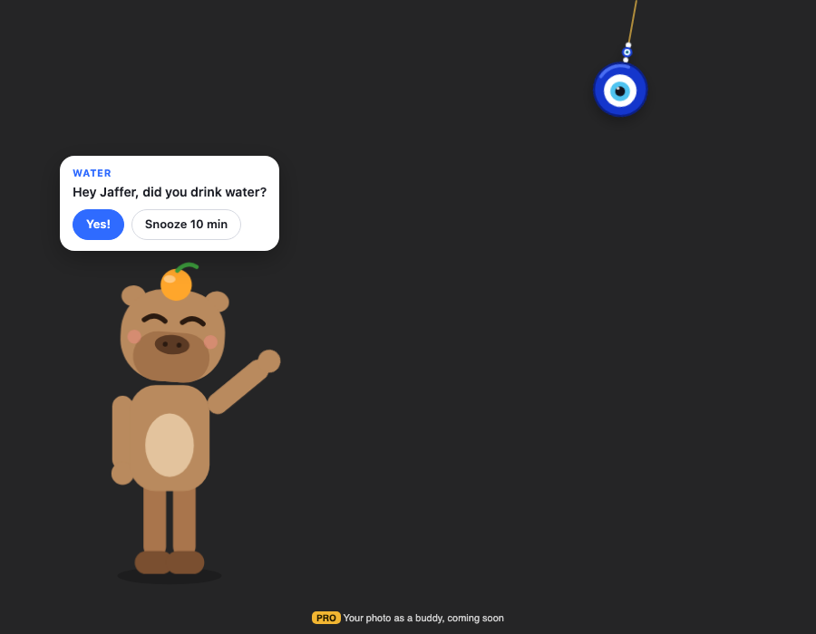
6. Troubleshooting
- The DeskBuddy view is too short. If the panel is very small, the buddy waves and the question appears as a normal VS Code pop-up instead (picture below). Drag the panel taller, or open the big stage, to see the bubble and rides.
- I don't see the buddy. Refresh the page. Browsers don't let any extension draw on their own pages, such as the Edge or Firefox add-on stores,
edge://orabout:pages, and the New Tab page. On those pages you get a normal system notification instead. Try a regular website. - No reminders at all. Check you haven't pressed Pause 1h, that the reminder is switched on, and that quiet hours aren't active. Press Try to test.
- No notification pop-up. Allow notifications for your browser in your system settings.
- Buddy hides my content. It only sits at the bottom of the page. Switch Desk pet off, or use Pause 1h.
- Still stuck. Email support@zerotodeploy.in or open an issue at github.com/JAFFERSHA/deskbuddy/issues.
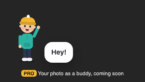
Your privacy
DeskBuddy collects no personal data, has no account and shows no ads. Your settings stay on your own device. Read the privacy policy.